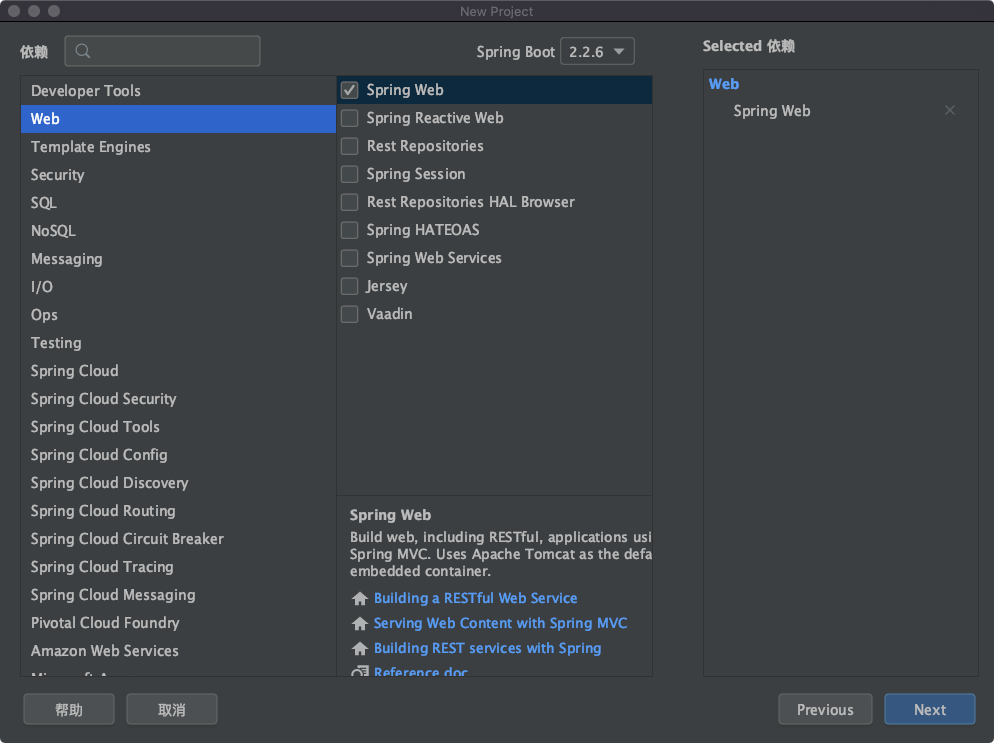
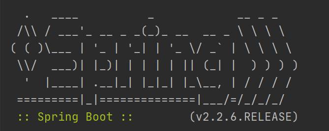

Spring 和 Spring Boot 的区别很多新手容易搞混，从这道简单的面试题也可以很轻易试探出你的 Java 基础功底，如果连这个问题都答不上来的话，通常就没有什么下文了，因为这已经是用人单位对面试者的最低要求了，所以本课时我们就来看一下二者的区别，以及 Spring Boot 的特性。
我们本课时的面试题是，Spring 和 Spring Boot 有什么区别？Spring Boot 的优点有哪些？
典型回答
作为 Java 开发人员对 Spring 框架都很熟悉，Spring 为 Java 程序提供了全面的基础架构支持，包含了很多非常实用的功能，如 Spring JDBC、Spring AOP、Spring ORM、Spring Test 等，这些模块的出现，大大的缩短了应用程序的开发时间，同时提高了应用开发的效率。
Spring Boot 本质上是 Spring 框架的延伸和扩展，它的诞生是为了简化 Spring 框架初始搭建以及开发的过程，使用它可以不再依赖 Spring 应用程序中的 XML 配置，为更快、更高效的开发 Spring 提供更加有力的支持。Spring Boot 具体的特性如下。
Spring Boot 特性一：更快速的构建能力
Spring Boot 提供了更多的 Starters 用于快速构建业务框架，Starters 可以理解为启动器，它包含了一系列可以集成到应用里面的依赖包，你可以一站式集成 Spring 及其他技术，而不需要到处找依赖包。
例如在 Spring 中如果要创建 Web 应用程序的最小依赖项为：
1 | <dependency> |
而 Spring Boot 只需要一个依赖项就可以来启动和运行 Web 应用程序，如下所示：
1 | <dependency> |
当我们添加了 Starter 模块支持之后，在项目的构建期，它就会把所有其他依赖项将自动添加到项目中。
这样的例子还有很多，比如测试库，如果是 Spring 项目我们通常要添加 Spring Test、JUnit、Hamcrest 和 Mockito 库；而如果是 Spring Boot 项目的话，只需要添加 spring-boot-starter-test 即可，它会自动帮我们把其他的依赖项添加到项目中。
常见的 Starters 有以下几个：
- spring-boot-starter-test
- spring-boot-starter-web
- spring-boot-starter-data-jpa
- spring-boot-starter-thymeleaf
Spring Boot 特性二：起步依赖
Spring Boot 提供了起步依赖，也就是在创建 Spring Boot 时可以直接勾选依赖模块，这样在项目初始化时就会把相关依赖直接添加到项目中，大大缩短了查询并添加依赖的时间，如下图所示：

Spring Boot 特性三：内嵌容器支持
Spring Boot 内嵌了 Tomcat、Jetty、Undertow 三种容器，其默认嵌入的容器是 Tomcat，这个在我们启动 Spring Boot 项目的时候，在控制台上就能看到，具体信息如下：
o.s.b.w.embedded.tomcat.TomcatWebServer :Tomcat started on port(s): 8080 (http) with context path ‘’
可以看出 Spring Boot 默认使用的是 Tomcat 容器启动的。
我们可以通过修改 pom.xml 来移除内嵌的 Tomcat 更换为其他的容器，比如更换为 Jetty 容器，配置如下：
1 | <dependency> |
当我们添加完成之后，再重新生成 pom.xml 文件，然后再启动 Spring Boot 项目容器信息就变了，如下所示：
o.e.jetty.server.AbstractConnector: Started ServerConnector@53f9009d{HTTP/1.1, (http/1.1)}{0.0.0.0:8080}
o.s.b.web.embedded.jetty.JettyWebServer
可以看出 Spring Boot 使用了我们指定的 Jetty 容器启动了。
Spring Boot 特性四：Actuator 监控
Spring Boot 自带了 Actuator 监控功能，主要用于提供对应用程序监控，以及控制的能力，比如监控应用程序的运行状况，或者内存、线程池、Http 请求统计等，同时还提供了关闭应用程序等功能。
Actuator 提供了 19 个接口，接口请求地址和代表含义如下表所示：
| 访问路径 | 描述 |
|---|---|
| /auditevents | 显示应用暴露的审计事件（比如认证进入） |
| /beans | 显示应用程序中所有 Spring Bean 的完整列表 |
| /caches | 公开可用的缓存 |
| /conditions | 显示在配置和自动配置类上评估的条件以及它们匹配或不匹配的原因 |
| /configprops | 获取全部环境属性 |
| /env | 获取全部环境属性 |
| /flyway | 提供一份 Flyway 数据库迁移信息 |
| /health | 显示应用程序运行状况信息 |
| /httptrace | 显示 HTTP 跟踪信息（默认情况下，最近 100 个 HTTP 请求-响应交换） |
| /info | 获取应用程序的定制信息，这些信息由 info 开头的属性提供 |
| /integrationgraph | 显示 Spring Integration 图，需要依赖于 spring-integration-core |
| /loggers | 显示和修改应用程序的配置 |
| /liquibase | 显示已应用的所有 Liquibase 数据库迁移 |
| /metrics/{name} | 报告指定名称的应用程序度量值 |
| /mappings | 显示所有 @RequestMapping 路径的列表 |
| /scheduledtasks | 显示应用程序中的计划任务 |
| /sessions | 允许从 Spring Session 支持的会话存储中检索和删除用户会话，需要使用 Spring Session 基于 Servlet 的 Web 应用程序 |
| /shutdown | 使应用程序正常关闭，默认禁用 |
| /threaddump | 获取线程活动的快照 |
考点分析
很多人都知道 Spring Boot 是基于 Spring 的，使用它可以更加快速高效的构建 Spring，然而当面试官问到 Spring Boot 是如何高效构建 Spring 时，可能大部分人回答不上来了，上面讲解的 Spring Boot 四大特性基本涵盖了此问题的答案。如果面试官继续追问更深的细节的话，可能会问到关于 Spring Boot 执行的源码细节，比如 Spring Boot 的启动流程是怎么样的？
知识扩展
Spring Boot 启动源码分析
我们知道 Spring Boot 程序的入口是 SpringApplication.run(Application.class, args) 方法，那么就从 run() 方法开始分析吧，它的源码如下：
1 | public ConfigurableApplicationContext run(String... args) { |
从以上源码可以看出 Spring Boot 的启动总共分为以下 18 个步骤。
Spring Boot 的启动流程
1.创建并启动计时监控类
此计时器是为了监控并记录 Spring Boot 应用启动的时间的，它会记录当前任务的名称，然后开启计时器。
2.声明应用上下文对象和异常报告集合
此过程声明了应用上下文对象和一个异常报告的 ArrayList 集合。
3.设置系统属性 headless 的值
设置 Java.awt.headless = true，其中 awt（Abstract Window Toolkit）的含义是抽象窗口工具集。设置为 true 表示运行一个 headless 服务器，可以用它来作一些简单的图像处理。
4.创建所有 Spring 运行监听器并发布应用启动事件
此过程用于获取配置的监听器名称并实例化所有的类。
5.初始化默认应用的参数类
也就是说声明并创建一个应用参数对象。
6.准备环境
创建配置并且绑定环境（通过 property sources 和 profiles 等配置文件）。
7.创建 Banner 的打印类
Spring Boot 启动时会打印 Banner 图片，如下图所示：

此 banner 信息是在 SpringBootBanner 类中定义的，我们可以通过实现 Banner 接口来自定义 banner 信息，然后通过代码 setBanner() 方法设置 Spring Boot 项目使用自己自定义 Banner 信息，或者是在 resources 下添加一个 banner.txt，把 banner 信息添加到此文件中，就可以实现自定义 banner 的功能了。
8.创建应用上下文
根据不同的应用类型来创建不同的 ApplicationContext 上下文对象。
9.实例化异常报告器
它调用的是 getSpringFactoriesInstances() 方法来获取配置异常类的名称，并实例化所有的异常处理类。
10.准备应用上下文
此方法的主要作用是把上面已经创建好的对象，传递给 prepareContext 来准备上下文，例如将环境变量 environment 对象绑定到上下文中、配置 bean 生成器以及资源加载器、记录启动日志等操作。
11.刷新应用上下文
此方法用于解析配置文件，加载 bean 对象，并且启动内置的 web 容器等操作。
12.应用上下文刷新之后的事件处理
这个方法的源码是空的，可以做一些自定义的后置处理操作。
13.停止计时监控类
停止此过程第一步中的程序计时器，并统计任务的执行信息。
14.输出日志信息
把相关的记录信息，如类名、时间等信息进行控制台输出。
15.发布应用上下文启动完成事件
触发所有 SpringApplicationRunListener 监听器的 started 事件方法。
16.执行所有 Runner 运行器
执行所有的 ApplicationRunner 和 CommandLineRunner 运行器。
17.发布应用上下文就绪事件
触发所有的 SpringApplicationRunListener 监听器的 running 事件。
18.返回应用上下文对象
到此为止 Spring Boot 的启动程序就结束了，我们就可以正常来使用 Spring Boot 框架了。
小结
本课时首先讲了 Spring 和 Spring Boot 的区别，Spring Boot 本质上是 Spring 的延伸，它是基于 Spring 的，它为快速构建和开发 Spring 提供了有力的支撑；接着介绍了 Spring Boot 的四大特性：更快速的构建能力、起步依赖、内嵌容器支持、Actuator 监控支持等，最后 还介绍了 Spring Boot 启动的 18 个步骤。